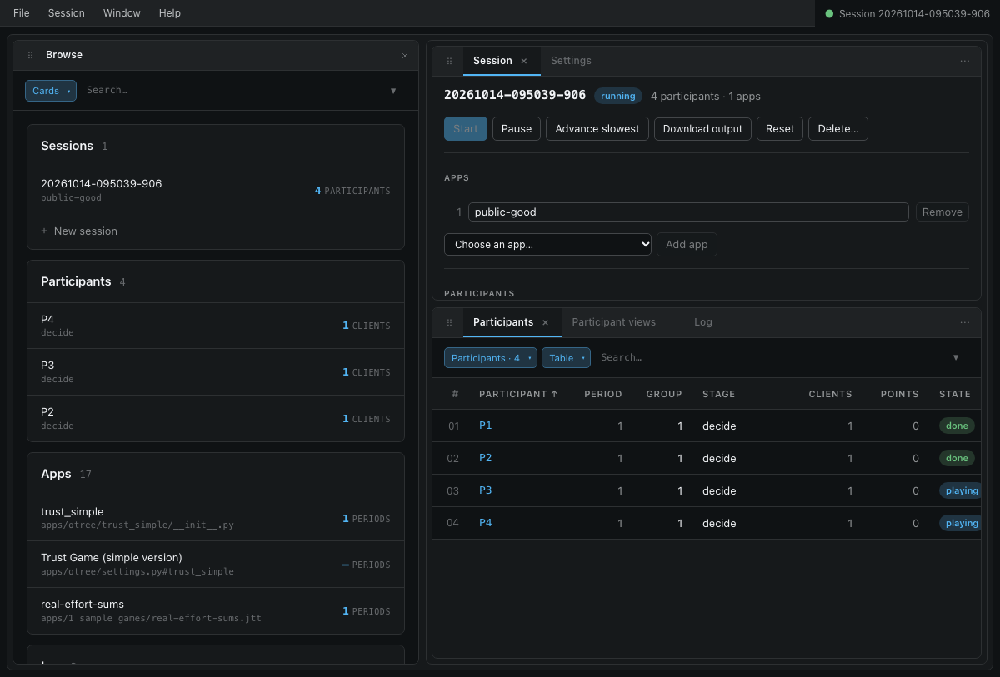
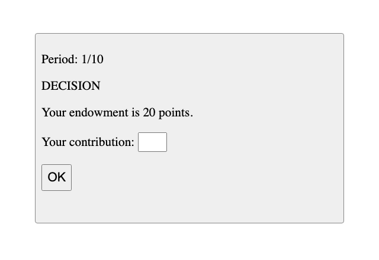

This tutorial shows how to start and run a session. A session consists of a series of apps. We will use the public goods game described in Box 1, which comes with jtree (public-goods, in samples/jtree; see the samples library). The next tutorial shows how to build it.
Box 1 - Description of the simple public goods game.
#########
A group of players is given an endowment from which they may contribute a certain amount to the creation of a public good. The total amount produced of the public good is the sum of player contributions multiplied by a production factor. The public good is then divided equally among all players in the group. The payoff to each player is their endowment, minus their contribution, plus their share of the public good.
#########
The admin
The admin at /admin/ is a menu bar over panels. Panels can be dragged into tabs, splits and floating windows; Window → Reset layout puts them back. The open panels and their arrangement are in the address (?w=…), so reloading the page keeps them and a link opens them as they were; a panel's ⋯ menu can pop it out to a browser window of its own.
- Browse: every session, participant, app (queues included) and log entry, searchable. Opening a row opens it in its own panel.
- Session: the open session.
- Participants: the open session's participants, live: their app, period, group, stage, points and state.
- Participant views: chosen participants' own pages, side by side.
- App: one per app you open. App editor: one per app you edit.

Start a session
- In Browse, open the
public-goodsapp. - In its panel, press "New session with this app". jtree makes a new session with this app, and shows it in the Session panel, alone in the window. The Window menu brings back the other panels (Participants, say).
- Under Participants, set the number of participants (4, one group) and press "Set".
- Press "Start".
The session is now running. To add more apps, choose them under Apps and press "Add app", before the session starts; participants play them in order. An app's "Add to open session" does the same. A queue adds all of its apps. Apps that share a name are listed with the folders that tell them apart in front (jtree/cournot, otree/cournot).
Watch and test
Participants join at the link the Session panel shows, with their own id in place of the last part (/P1, /P2, ...). The Participants panel shows where each one is. Opening a participant shows their page in Participant views, where you can play as them.

To test a session alone, turn Autoplay "On for all": each participant's page then fills in its inputs and presses its buttons, after a delay you can set. A session of oTree apps or z-Tree treatments can also be played by bots ("Play with bots"): oTree apps by their own bots (tests.py), or a generic bot that fills in what each page asks; z-Tree treatments by a generic z-Tree bot.
The Session menu, and the buttons at the top of the Session panel, run the session: Start, Pause and Resume (which stop and restart its timers), "Advance slowest" (which moves the participants who are furthest behind on to their next stage), "Reload all clients", Reset and Delete.
Options
Under Options, a session can let new participants log in (with ids it does not have yet), let participant views opened in the admin play, and treat participant ids as case-sensitive. "Rules" chooses whose rules apply where z-Tree, oTree and jtree differ (see Settings).
If you have rooms, the Session panel lists them: "Open this session here" sends the room's participants into this session (see Rooms).
Data
As participants finish each app, its data is written to the session's folder, in client/sessions. "Download output" downloads it as a CSV file, with a list of the participants and their earnings at the end. Sessions with oTree apps can also be downloaded as oTree's CSV files ("all apps, wide", each app's, page times, and the apps' own exports).
Sessions are saved as they run. With the setting loadSessions on, starting jtree again loads them, and participants carry on where they were (see Settings).